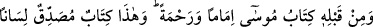
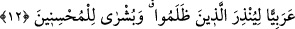

aklım fesada, beynim dumura uğradı diye düşünürüm. Ey kardeşim bu adamın gönül
gözündeki perdenin kesafet ve yoğunluğuna ve bu adamın ne derece şiddetli inkâr ve
cehâlet içinde olduğuna bak ve düşün.
Molla Câmî şöyle demiştir:
Kelîmullah için Tur ağacından açılmış bir gül,
Çerçöp ve süprüntüden niyazda bulunsun hâşâ!
Biçâre fakîh dostun hüsnünü (güzelliğini) inkâr eder,
Ona söyle de can gözünü cilâlayıp parlak hâle getirsin.
12. Ondan önce de bir rahmet ve rehber olarak Mûsâ’nın kitabı vardır. Bu
(Kur’ân) da, zulmedenleri uyarmak ve iyilik yapanlara müjde olmak üzere arap
lisanıyla indirilmiş, doğrulayıcı bir kitaptır.
“Ondan” Kur’ân’dan “önce de” Allah’ın dininde uyulan “önder ve” îmân edip
mucibiyle amel eden için “rahmet olarak Mûsâ’nın Kitabı vardır.” Hakkında ileri geri
konuştukları “Bu Kur’ân da şirk ile kendilerine zulmedenleri uyarmak, güzel
davrananları müjdelemek için arap diliyle indirilmiş” şânı yüce, önder ve rahmet olan
Mûsâ’nın kitabını yahut kendinden önceki bütün kitapları “doğrulayan Kitaptır.”
“Ondan önce” yâni Kur’an’dan önce “de önder ve rahmet olarak Mûsâ’nın Kitabı
vardır.” Bu ifâde, “kitab-ı Mûsâ” kavlinin mukaddem haberidir. Kâfirlerin “Bu eski bir
yalandır” sözünü red ve iptaldir. Zira Kur’ân’ın Mûsâ’nın kitabını tasdik eder
mahiyette oluşu Kur’ân’ın kesin bir gerçek olduğunu takrir etmektedir. Yâni kâfirler
Mûsâ’nın, kitap ehlinin ilim ehli olduklarını kabul etmişlerdir. Bu Peygamber hakkında
onun Tevrâtın hakemliğine başvurmuşlardır. Bu Kur’ân ise Tevrâtı ve diğer bütün ilâhi
kitapları tasdik eder mahiyettedir.
“Arap diliyle indirilmiş (kendinden önceki Kitabı) doğrulayan Kitaptır”. Bu,
hakkında ileri geri konuşup durdukları şânı yüce kitap Kur’ân Mûsâ’nın önder ve
rahmet olan kitabını yahut kendinden önce geçmiş bütün ilâhî kitapları doğrulayan
kitaptır. Bu kitab, indiği kavim arap olduğu için arap lisanı üzere telaffuz edilmiştir.
“Güzel davrananları müjdelemek içindir.” Yâni bu kitap uyarı ve müjde içindir.
Yahûdîler ve hristiyanlar zâlimlerdendir. Çünkü yahûdîler Üzeyr Allah’ın oğludur,
hristiyanlar da İsâ Mesih Allah’ın oğludur, demişlerdir. Yine yahûdîler Hz. Muhammed
(s.a.)’in Tevrât ve İncildeki sıfatını değiştirmişler ve kelimeleri yerlerinden
kaydırmışlardır.
Allah Teâlâ şöyle buyuruyor: “Yahûdîlerden öyleleri var ki kelimeleri yerlerinden
kaydırıyorlar.” (en-Nisa, 4/46). İşte Peygamberimiz (s.a.) bunlara uyarıcı, bütün